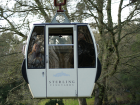
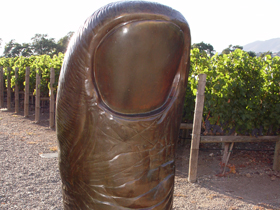
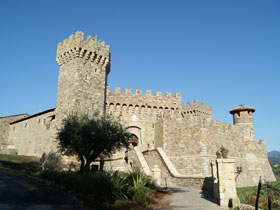

"I just wanted to write and say how wonderful our driver, Rich Martin was when we visited Napa Valley about three weeks ago. We had a list of wineries we wanted to go to and he took us to some absolutely fabulous places we would not have known about otherwise. For instance, Rich took us to a fabulous little family winery called Larson Family. He was kind enough to call ahead and they opened the place just for my boyfriend and I to taste wine at 9:30 a.m.! It was great. He also had a cute little picnic set up for us outside at the V. Sattui winery so we could enjoy our lunches in the sun. Rich's personality was just perfect-he was charming and sweet and treated us wonderfully. We couldn't have had a better time with him."
- Jaime L. Hochhausen, Attorney at Law, Quarles & Brady LLP